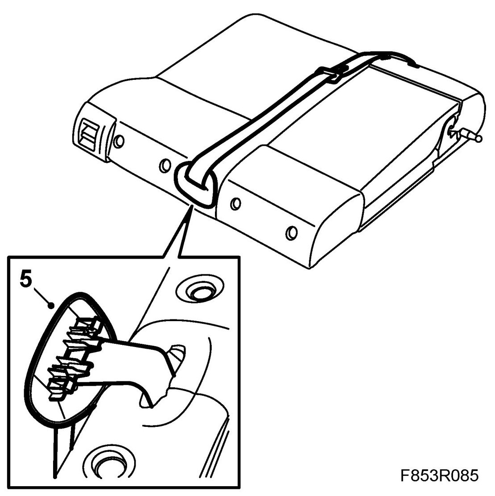
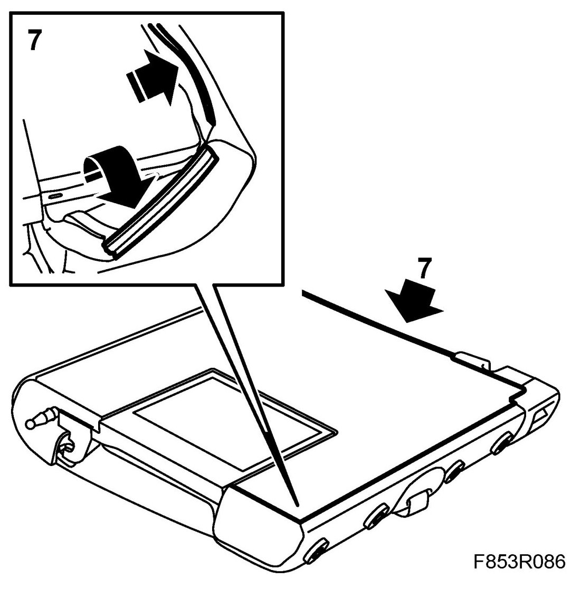
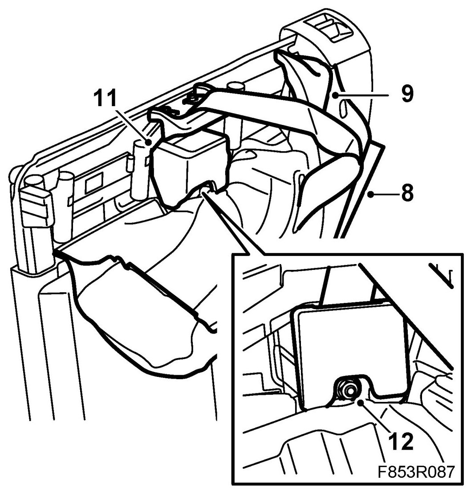
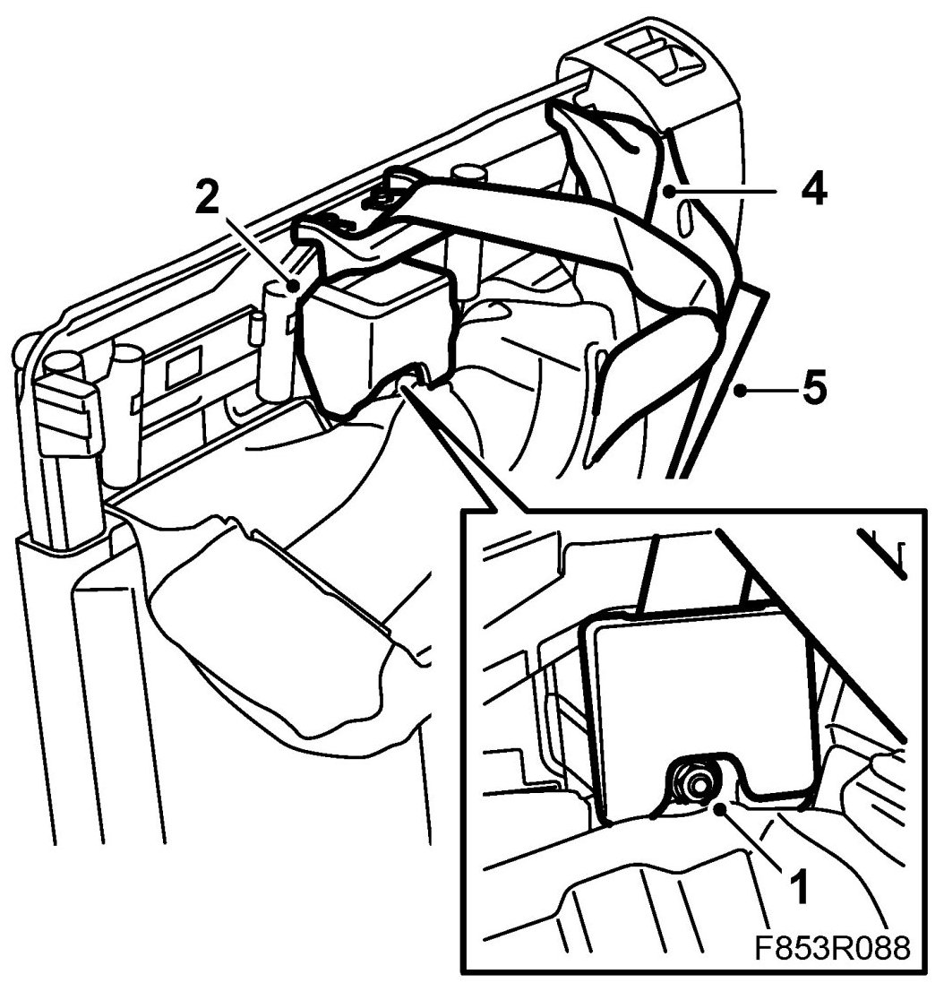
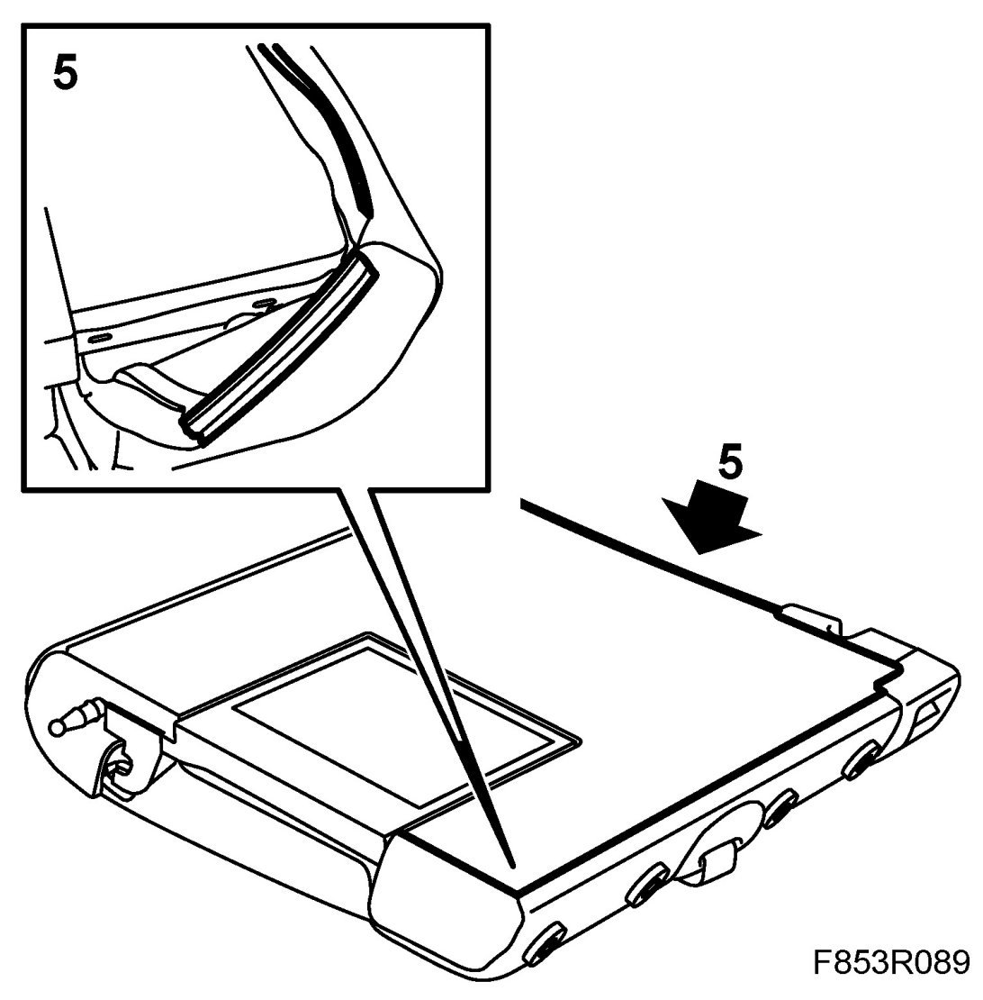
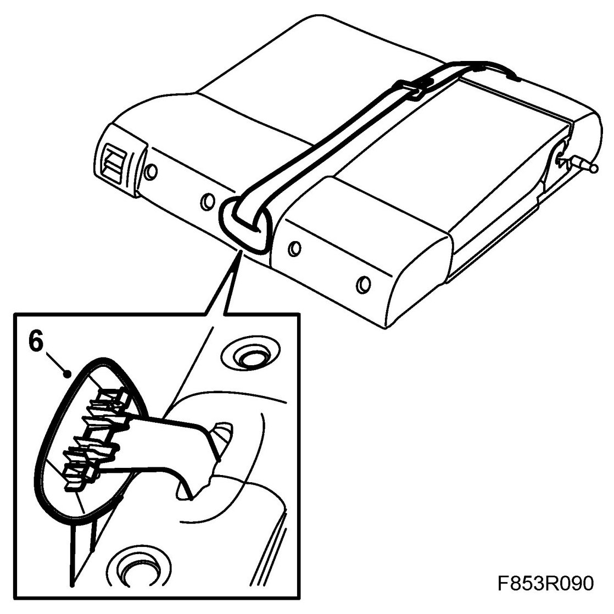

Inertial Reel, Rear, Centre, 5D
Inertial Reel, Rear, Centre, 5D
To remove
1. Remove the rear seat cushion.
2. Remove Rear seat backrest, 5D
3. Remove head restraint and its sleeves.
4. Remove Backrest lock plastic covers, 5D.
5. Dismantle the seat belt guide from the backrest.

6. Lay down the backrest with the rear face up.
7. Remove the backrest upholstery from the upper section and from the sides of the backrest.

8. Carefully fold the trim over the corner and top of the backrest so that the foam cushion becomes free.

9. Carefully remove the top part of the foam cushion so that the centre inertia reel comes free.
10. Remove the seat belt carrier from the backrest frame.
11. Dismantle the inertia reel's protective cover.
12. Remove the inertia reel.
To fit
1. Fit the inertia reel. Make sure the belt buckle is positioned correctly.

Tightening torque 45 Nm (33 lbf ft)
2. Fit the protective cover on the inertia reel.
3. Fit the seat belt carrier on the backrest frame. Make sure that the seat belt tab and the seat belt guide are on the right side of the seat belt carrier.
Tightening torque 37 Nm (27 lbf ft)
4. Fit the top section of the foam cushion.
5. Carefully fold the trim over the corner and top of the backrest and secure the trim strips. Make sure the trim is stretched.

6. Fit the seatbelt guide to the backrest.

7. Fit the head restraint sleeves and the head restraints. Make sure the locking clips in the sleeves lock correctly.
8. Fit Backrest lock plastic covers, 5D.
9. Fit Rear seat backrest, 5D.
10. Fit the rear seat cushion.
11. Check the operation of the seat belt.